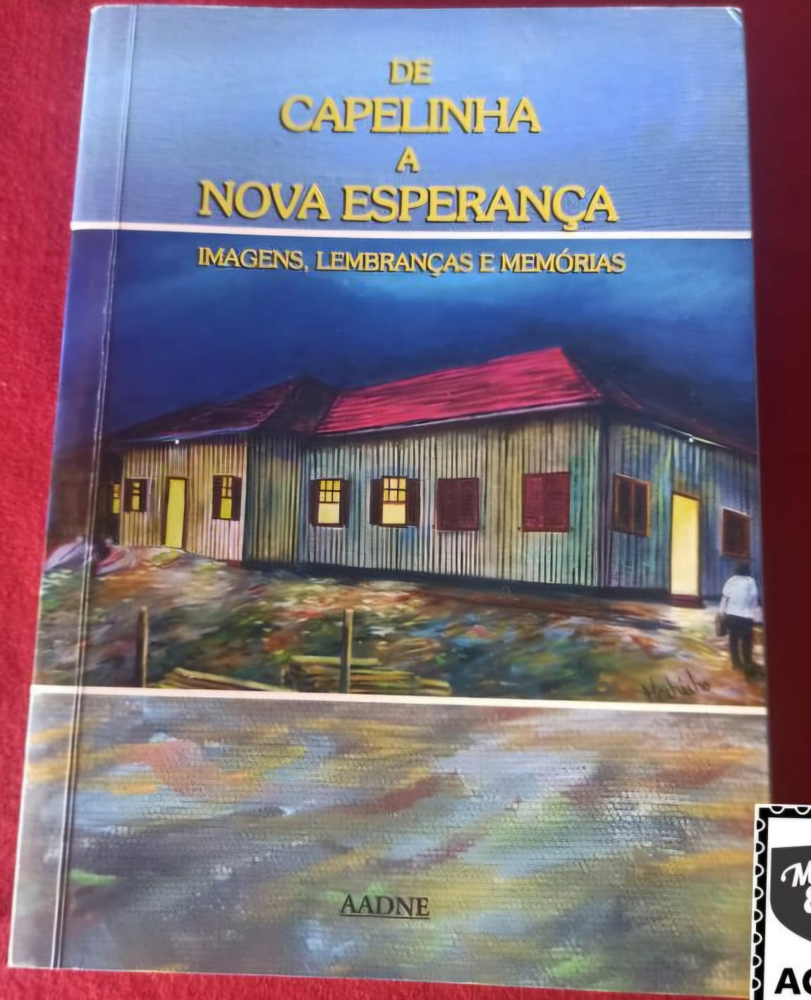

De Capelinha
a Nova Esperança
O livro De Capelinha à Nova Esperança conta a história da formação e transformação de uma comunidade ao longo do tempo, mostrando como um pequeno povoado chamado Capelinha evoluiu até se tornar o bairro Nova Esperança. A obra reúne relatos de moradores antigos, memórias e acontecimentos marcantes que ajudam a reconstruir o passado da região. Por meio dessas histórias, o livro destaca aspectos culturais, sociais e econômicos, além das dificuldades enfrentadas pela população e as conquistas alcançadas com o passar dos anos. No geral, o livro valoriza a identidade local e preserva a memória coletiva, mostrando como a união dos moradores foi essencial para o crescimento e desenvolvimento da comunidade.